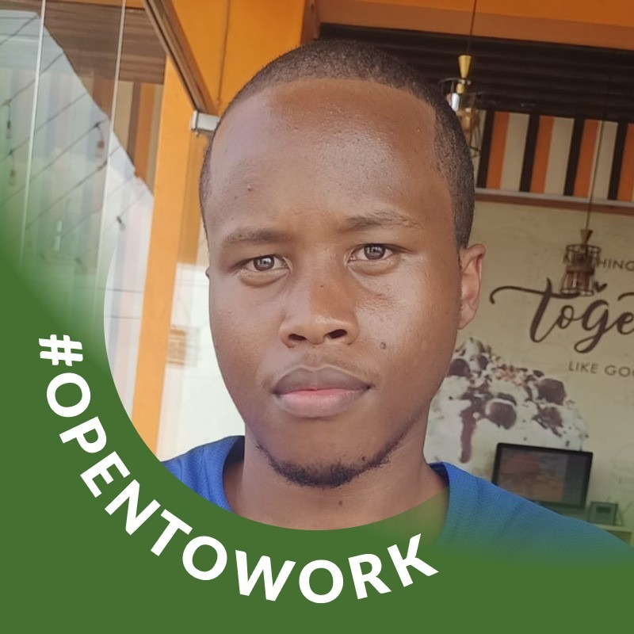
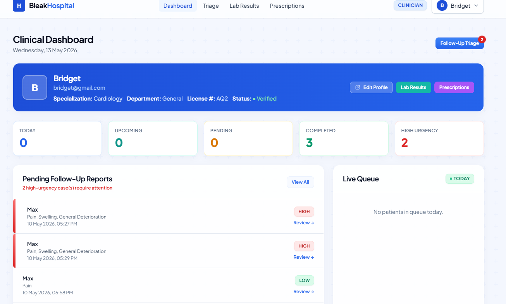

Hi, my name is
Wairimu Max Murage.
Software Developer | Full-Stack & Healthcare IT Systems.
I am a Bachelor of Science in Information Technology student graduating in 2026 with hands-on software development experience building secure, full-stack web systems. I specialize in Laravel, secure data pipelines, and healthcare IT solutions.
About Me
I am a Bachelor of Science in Information Technology student at Jomo Kenyatta University of Agriculture and Technology (JKUAT) graduating in August 2026 with hands-on software development experience building secure, full-stack web systems.
I designed and built a Laravel-based Hospital Management and Patient Triage System featuring custom security middleware, automated clinical validation logic, and audit-grade traceability — work that sharpened my thinking around data integrity, input validation, and system trust at the architecture level.
My technical foundation spans Java, TypeScript, JavaScript, PHP, Python, and core web technologies (HTML, CSS), and I am comfortable working across the stack: backend logic, securing data pipelines against injection and scripting attacks, and shaping usable front-end interfaces.
A three-month ICT attachment in a national referral hospital (KUTRRH) further strengthened my understanding of system reliability, end-user support, and working within regulated, high-responsibility environments. I bring strong documentation habits, clear communication, and a security-conscious approach to development.

Technical Arsenal
Programming & Web Development
- Java, TypeScript & JavaScript
- PHP & Python
- Laravel (PHP MVC Framework)
- RESTful Application Logic
- Middleware & Pipeline Design
- HTML5 & CSS3 Responsive UI
Application Security & Data
- SQL Injection Prevention
- Cross-Site Scripting (XSS) Mitigation
- Regex Pattern-Based Input Scanning
- Audit Logging & Traceability Design
- Relational Data Modeling & Validation
IT Systems & Networking
- LAN/WAN Fundamentals & Security
- Routers, Switches & Hardware Support
- Computer Maintenance & Troubleshooting
- HCI Principles & Usability Testing
- Git, VS Code & Linux Environments
Where I've Worked
IT Attachment / ICT Support Intern
3 Months AttachmentKenyatta University Teaching, Referral & Research Hospital (KUTRRH) — Nairobi, Kenya
- Supported ICT operations within a high-demand healthcare environment, contributing to the stability and availability of critical systems used across multiple hospital departments.
- Assisted in troubleshooting hardware, software, and basic network connectivity issues, helping maintain ~80–90% system uptime for end users during daily operations.
- Supported installation, configuration, and maintenance of computers, printers, and peripheral devices, reducing device-related downtime and improving staff productivity.
- Assisted in user account management, system access control, and basic data handling tasks, ensuring operational continuity and adherence to access policies.
- Gained practical exposure to healthcare IT workflows, reliability requirements, and data security practices in a regulated environment — directly informing the security and validation logic in the Patient Triage System project.
Cloud and Systems Trainee
May 2024 - August 2024Huawei ICT Academy — Nairobi, Kenya
- Participated in structured ICT training focused on networking fundamentals, cloud computing, and IT system implementation.
- Strengthened understanding of networking principles, cloud computing concepts, and system deployment basics.
- Gained hands-on exposure to IT infrastructure setup and system configuration practices.
- Completed Huawei Networking Technologies training and certification.
Engineering Case Studies
Backend Architecture & Clinical Interoperability
Secure Hospital Management & Middleware System
The Challenge
A county referral hospital required seamless interoperability between patient-generated data and the central EMR (KenyaEMR/OpenMRS), without exposing the core database to external vulnerabilities.
The Engineering Approach
Designed a multi-stage Laravel middleware pipeline focusing on zero-trust architecture. Implemented rigid payload validation, RBAC authentication, and full audit logging at every step of the data transformation process.
- Laravel 11
- PHP
- PostgreSQL
- REST APIs
- Security Middleware

Security & Data Validation Engine
Patient Triage & Validation Engine
The Challenge
Clinicians were overwhelmed with unstructured, potentially contradictory, and unverified data submissions from external portals, creating both operational inefficiency and security risks (SQLi/XSS).
The Engineering Approach
Engineered an Active Security Scanner utilizing deep recursive text mining via Regex to block injection attacks. Paired this with an automated clinical validation engine that mathematically scores urgency and flags contradictory logic before hitting the database.
- Laravel MVC
- Regex Firewalls
- Input Scanning
- Audit Logging

Education
Bachelor of Science in Information Technology
Expected Graduation: August 2026Jomo Kenyatta University of Agriculture and Technology (JKUAT) — Nairobi, Kenya
Key Coursework: Software Development, Computer Networks, Database Systems, Systems Analysis & Design
Certifications
Cisco Networking Certification
Cisco Networking Academy
CertifiedCyberShujaa Program Certification
Digital Skills & Cybersecurity Training
CertifiedAWS Generative AI Certificate
Large Language Models & Generative AI Fundamentals
CertifiedHuawei Networking Technologies Certification
Huawei ICT Academy
August 2024Get In Touch
Have an exciting opportunity, a complex system to discuss, or just want to connect? Send me a message below or reach out via email.